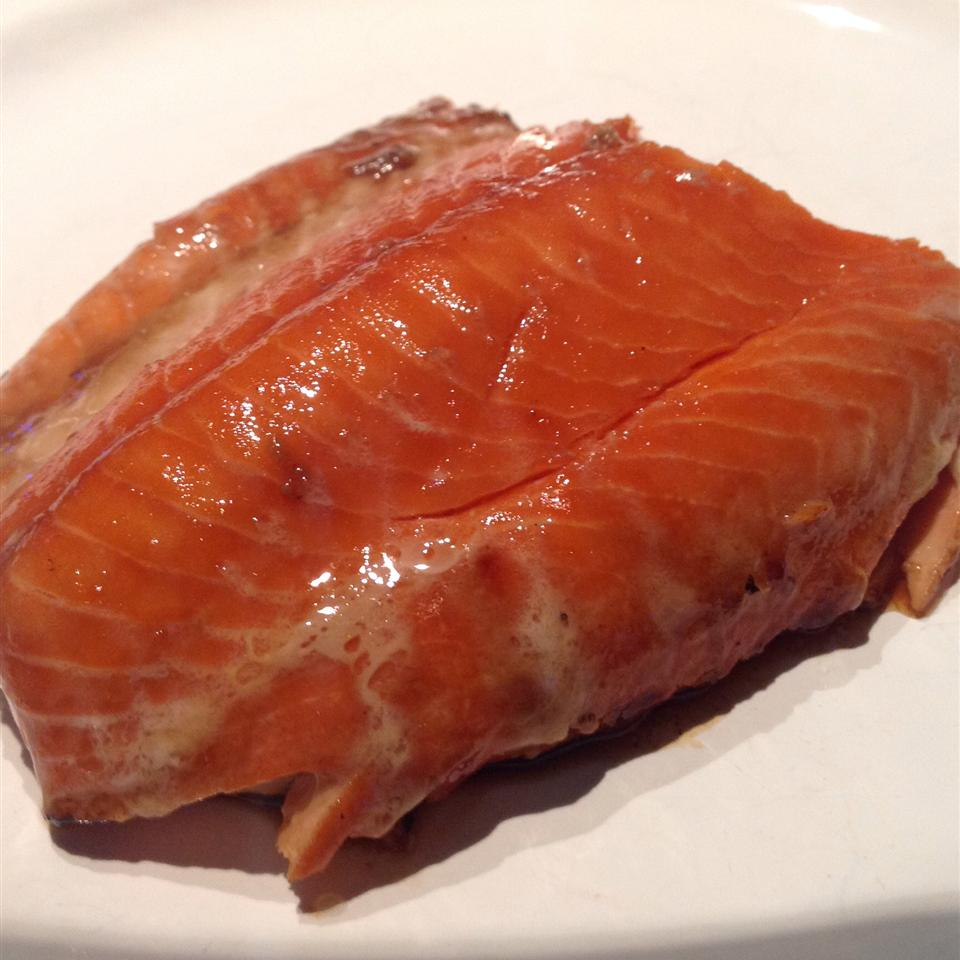

Alder Plank Smoked Salmon

Description
This smoked salmon derives its flavor from Alder wood planks. I get these planks at the local lumber yard. Be sure you tell whoever helps you that you are cooking salmon on the wood so that you do not get any creosote wood or other treated wood.
Also, make sure you know what plank size will fit in your smoker before you go to get the wood. This salmon will come out very moist and smoky, so be prepared for some of the best smoked fish you've ever eaten!
Ingredients
- 1 (3 pound) salmon fillet
- freshly ground black pepper to taste
- ⅛ cup packed brown sugar
- ½ teaspoon salt
- 1 tablespoon water
Steps
- Soak the salmon fillet in a brine solution for at least 4 hours, but preferably overnight. Also, submerge the alder wood plank in water, placing a heavy object on top of it to prevent floating.
- Preheat an outdoor smoker for 160 to 180 degrees F (70 to 80 degrees C).
- Remove the salmon from the brine, rinse thoroughly under cold running water, and pat dry with paper towels. Remove the wood plank from the water, and lay the fish out on the plank. Season with freshly ground black pepper.
- Smoke the salmon for at least 2 hours, checking after 1 1/2 hours for doneness. The fish is done when it flakes with a fork, but it should also not be too salty. As the fish smokes, the salt content reduces. Adjust the cooking time and salty flavor to your taste. (Note: Smoking a fillet can take 2 to 6 hours depending on your taste, the size of the fillet, and the fat content of the fish.)
- During the last 30 minutes of smoking, mix together the brown sugar and water to form a paste. Brush this liberally onto the salmon.